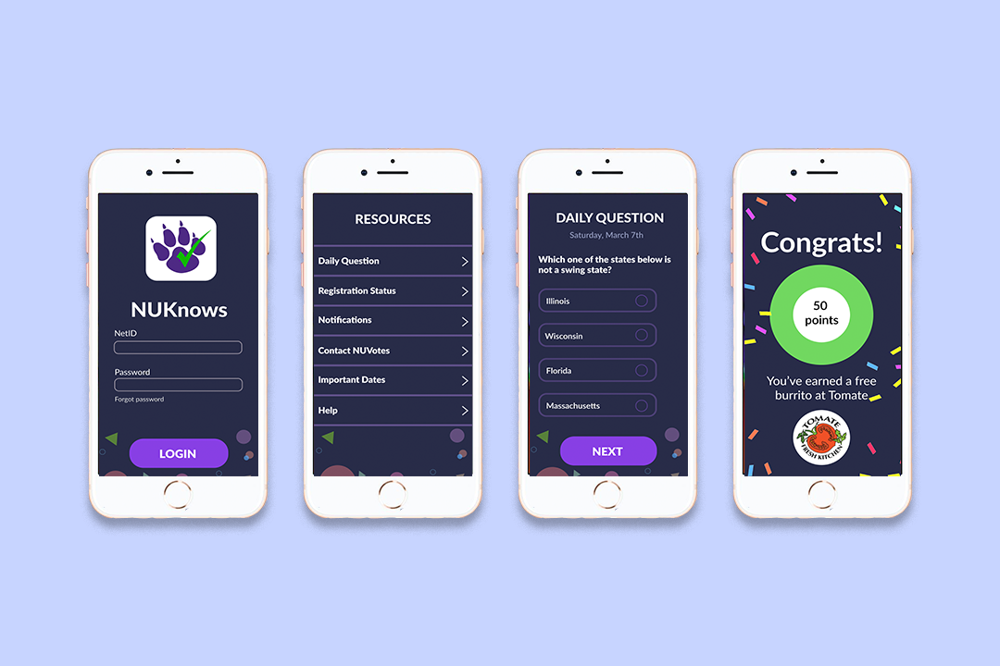
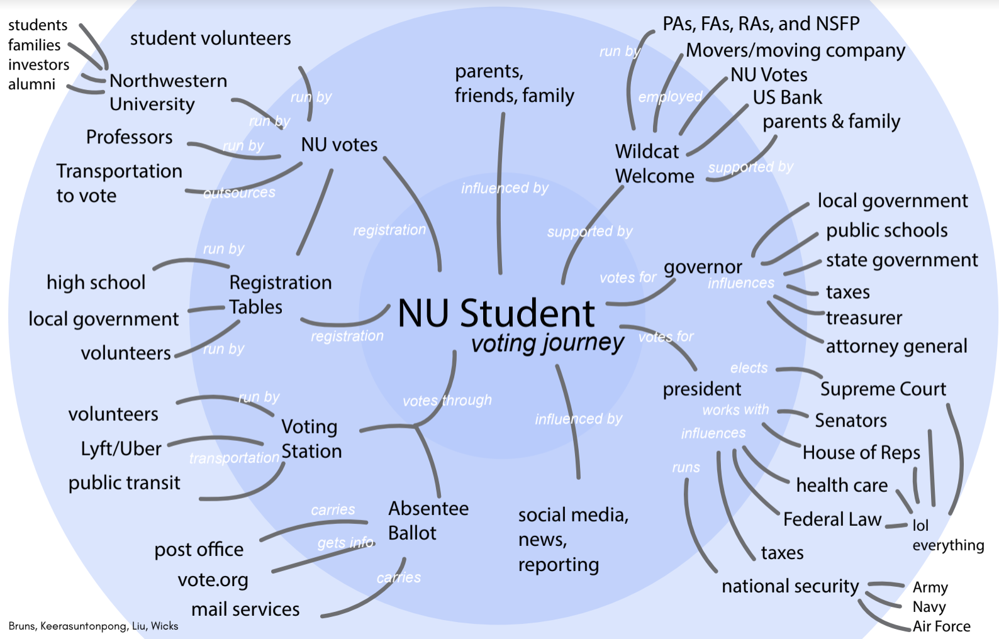
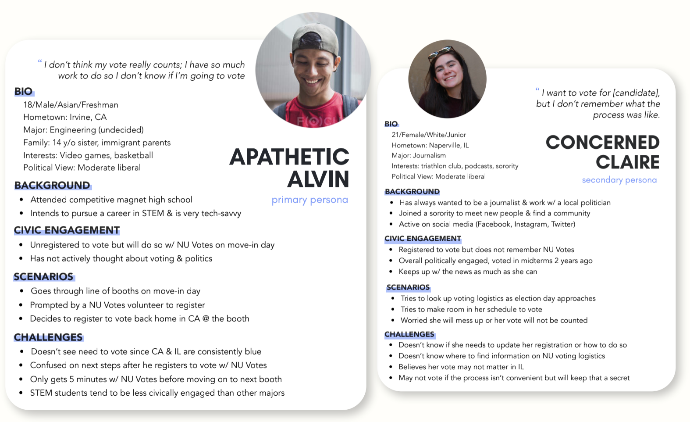
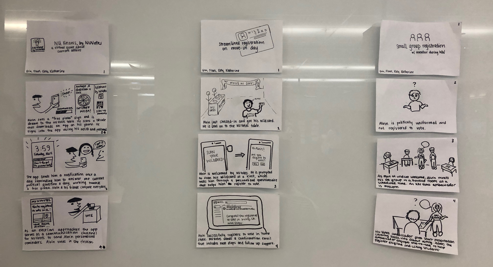
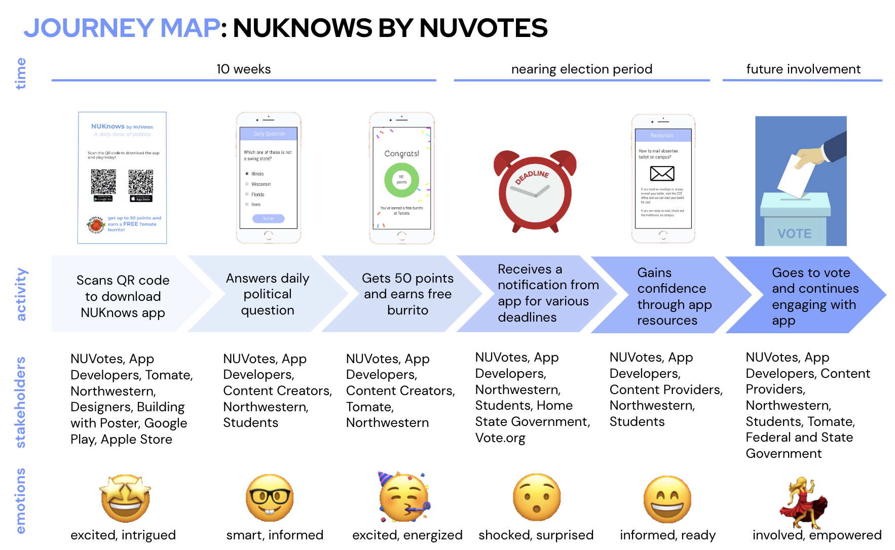
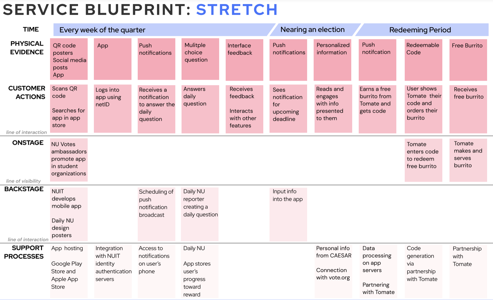

NUVotes
Role: Service Designer
When: January 2020 - March 2020
Teammates: Katherine Liu, Float Keerasuntonpong, Katy Wics
Outcome: A service that engages students with a daily question to increase their exposure to politics.

PROBLEM
NUVotes is a service at Northwestern University that provides a myriad of resources to help students vote. While Northwestern has one of the highest percentages of eligible students to vote, there is still more to be done.
RESEARCH
First, our team considered the possible stakeholders who would be involved with this project. This helped inform the team of who was at risk and who to get feedback from.

Next, we conducted contextual inquiries with three students, talked with 8 students using man-on-the-street style interviews, and went on a service safari to the Center for Civic Engagement at Northwestern (the home of NUVotes).
Through our research, we identified two key themes:
1. A majority of students who do not vote say it is because they feel too “uneducated” to vote.
2. NUVotes provides many resources that students are unaware exist.
Next, we created primary and secondary personas to keep in mind during the design process.

IDEATION AND NARROWING
The next step was to ideate possible solutions for tackling our key insights. Our team ideated over 100 ideas and then narrowed to our three best ideas. We storyboarded the ideas and presented the ideas to students and stakeholders to test excitement and feasibility.

FINAL DESIGN DIRECTION
Our landed on the idea of an application that prompts students to answer a daily political question. If students answer a certain number of questions correctly, they earn a free burrito from the local restaurant, Tomate (a crowd favorite). The application also works as a direct communication line for NUVotes to send students notifications about important deadlines.
We created a journey map of what the process would look like for the user and possible stakeholders at hand.

BUILD AND TEST
Integrated throughout the process of choosing our final design, we built and tested aspects of the design.
By posting in club organizations asking friends to sign up to test our service, we got 30 students to sign up to answer a daily question for 3 days. A Google number was to send users a link to a SurveyMonkey that prompted the user with a political question. Throughout the process, we received 60% engagement, with no incentive.
We also reached out to possible stakeholders for feedback on the feasibility of the design. We overwhelmingly got positive reinforcement. We put together a service blueprint to present to stakeholders.

TAKEAWAYS
In order to come to our final design direction, we combined several ideas from things that currently existing to ideas that were brought up in the ideation process. I learned the value of saying “yes, and” to all ideas and growing upon current processes that have proved to be productive.